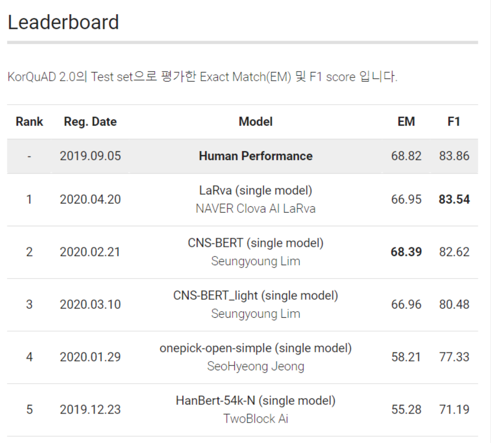

어떤 도메인이든 빠른 learning curve로 그 분야의 탑 티어가 될 수 있습니다.
"AI knows everything" 시대에 단순히 "정보를 많이 아는 것"은 더 이상 중요하지 않다고 생각합니다. 특히 연구 조직이 아닌, 프로덕트가 더 중요한 스타트업에서 풀어야 하는 문제는 대부분 본인에게 익숙한 도메인에서 시작되지 않습니다. 따라서 저는 본인이 잘하는 문제를 푸는 것보다, 시장에서 꼭 풀어야 하는 문제를 능동적으로 찾아 푸는 방향성이 앞으로의 엔지니어에게 필요하다고 생각합니다. 이는 문제에 접근하는 방식, 유지보수를 고려한 아키텍처 설계, 그리고 프로덕트를 매니징하는 전 과정을 아우르는 역량입니다.
저는 AI 엔지니어로 커리어를 시작했습니다. 이후 블록체인 필드에서 풀고 싶은 문제를 발견했고, AI에서 했던 것과는 전혀 다른 분야를 zero base부터 시작했습니다. 4년 동안 훌륭한 팀원들과 함께 3–4개월 주기로 프로덕트를 출시하며 6–7번의 프로덕트 사이클을 경험했습니다. 이 과정에서 엔지니어로서는 방향성은 맞지만 아직 개척되지 않은 문제들을 깊이 고민했고, 만든 프로덕트를 시장에서 성공시키기 위한 다양한 시도를 팀원들과 함께 해보았습니다.
창업을 경험하기 이전과 이후의 저는 비교할 수 없을 만큼 달라졌습니다. 엔지니어로서의 주체성뿐 아니라, 문제를 풀어가는 과정에서의 복잡한 인간관계와 낙오의 경험을 통해 훨씬 깊게 성장할 수 있었습니다. 이 과정에서 가장 깊이 배운 덕목은 윤리성과 책임감입니다.
제가 풀고자 하는 문제가 있는 곳이라면, 다음 커리어의 도메인은 상관없습니다. 하지만 엔지니어로서는 어떤 분야에서든 AI조차 풀지 못하는 어려운 문제를 프로덕트 관점에서 풀어나가고 싶고, 팀원으로서는 팀에 큰 위기가 닥쳤을 때 책임감 있게 그 무게를 질 수 있는 사람이 되고 싶습니다.
Give me any domain, and I'll climb the learning curve to become top-tier in that field.
In an age where "AI knows everything," simply knowing a lot is no longer what matters. Especially at a startup — where you have to win with product, not research — the problems you need to solve rarely start from a domain you're already comfortable in. So rather than solving the problems you're already good at, I believe the direction engineers should take is to actively seek out the problems that carry real market value and must be solved. This spans how you approach a problem, how you design architectures for maintainability, and how you manage a product end-to-end.
I started my career as an AI engineer. I then found problems I wanted to solve in blockchain, and started from zero in a field completely unlike anything I had done in AI. Over the past four years, alongside great teammates, I've been through 6–7 product cycles, shipping a new product every 3–4 months. Along the way, as an engineer I wrestled deeply with problems where the direction was right but the path was still unexplored, and with my team I tried every angle to make those products succeed in the market.
Who I am before and after founding is incomparably different. Beyond simply having engineering ownership, I grew far more deeply through the messy human dynamics of working problems out together and through the experience of falling behind. The values I took away most from this journey are integrity and accountability.
As long as there are problems I want to solve, the domain of my next career doesn't matter. As an engineer, I want to keep solving hard problems — problems even AI can't solve — from a product standpoint. As a teammate, I want to be the one who can carry the weight when the team faces a real crisis.
AI Skills
- LLM Distributed Pre-training
- Knowledge Distillation & Compression
- Programming NLP
- Document AI (LayoutLM, OCR)
- PyTorch / Python
Blockchain Skills
- Financial Modeling & DeFi Protocol Design
- Solidity Development & Gas Optimization
- Web3 Full-stack (FE / BE)
- On-chain Data Indexing Pipeline
- Data-driven Market Making & Arbitrage
- TypeScript (main) / Rust
Education
-
BS in Computer Engineering, 2015 – 22
Kyung Hee University (incl. two years of military service)
Industry Experience
Founding Engineer, Core Protocol
Clober (Merekat)
Clober is a DeFi protocol company — “Building DeFi primitives that matter” — building an order-book DEX on-chain. The core problem we worked on was bringing a decentralized order-book exchange fully on-chain and shipping it as an optimized, usable product. Over four years of founding-stage work I helped take Clober from zero to one across the full product surface — protocol internals, backend, and frontend.
Beyond the engineering itself, what four years of founding-stage work at Clober gave me: hands-on zero-to-one product experience (planning, UI/UX, execution, launch); comprehensive domain knowledge in finance; and practical experience in DeFi architecture design and financial modeling. These are the parts I carry forward the most.
The engineering work I personally did during that period breaks down as follows:
Task 1 — Clober v1 (2022.04 – 2023.03) — clober.io
- Built Clober v1 across the full stack (Smart contracts + Backend + Frontend).
- On the contract side, implemented gas-optimized on-chain order matching using segmented segment trees and octopus heaps.
- Write-up: ethresear.ch post · recap thread · gas benchmarks
Task 2 — DEX aggregator on Polygon zkEVM (2023.03 – 2023.06)
- Built a DEX aggregator for Polygon zkEVM in Rust, solo development, to support Clober’s growth on the chain.
Task 3 — Coupon Finance (2023.06 – 2024.06) — coupon.finance
- Built the frontend and backend of Coupon Finance, a sister protocol built to drive Clober’s growth.
- Coupon Finance is a fixed-rate DeFi lending protocol that tokenizes interest rates as tradable “coupons” on an on-chain order book — collapsing the deposit–borrow APY spread down to the order book’s bid–ask spread, so both lenders and borrowers get tighter rates than on traditional money markets.
Task 4 — ETH/USDC vault strategy (2024.06 – Present) — base.clober.io
- Responsible for the development and management of Clober’s ETH/USDC vault strategy, end-to-end.
- Improved market-making strategy using Markov modeling.
- Built the data pipeline powering strategy backtesting and simulation.
- Designed a real-time on-chain event tracking pipeline (Ponder-style indexing → Grafana dashboards) for live strategy monitoring and data analysis.
- Optimized DEX ↔ Clober arbitrage to reduce market-maker losses.
- Launches: Monad mainnet (2025.11), Base chain vault (2026.01).
AI Research Engineer (Full-time)
Upstage AI
Upstage AI is a Korean AI company focused on enterprise AI. I joined as a research engineer on the Document AI team during its early phase, working on the foundational models that later became part of Upstage’s document-understanding product line.
Task 1: LayoutLM training and fine-tuning
- Trained and fine-tuned LayoutLM — a multimodal transformer that jointly models page layout and text — for Korean document understanding.
Task 2: OCR labeling dataset
- Built the labeling dataset used to train the document understanding models.
Task 3: Document parser
- Built a parser for document processing.
Contract AI Engineer
Brunel AI
Brunel AI is a startup that builds AI-powered search products for patents. This was a formative experience in thinking about AI from a product perspective — the models I trained shipped into the actual product and came back with real user feedback.
Task: AI engineering across the stack
- Helped scope research problems into AI tasks that could be realized as real product features (e.g., deciding which data to collect for long-term value, and framing user problems as concrete ML tasks).
- Improved search quality by developing a model that recommends relevant patents from a user’s input query.
- Built the supporting infrastructure for the data pipeline and model serving.
AI Research Internship
NAVER Clova AI
NAVER Clova AI is one of Korea’s leading AI research organizations. I worked in the LaRva team on Korean language modeling, which is where I built deep practical experience with large-scale training on distributed GPU clusters. In six months I was able to contribute to several tasks at once, thanks to the team’s resources and mentorship.
Task 1: Pretraining large-scale language models (BERT, RoBERTa) in a distributed GPU environment
- Trained on up to 64 V100 GPUs with large-scale corpora in a distributed setup.
- Ran hundreds of pre-training experiments and learned how to avoid CPU/GPU bottlenecks, use mixed precision effectively, and manage large training datasets.
Task 2: Efficient and lightweight pretrained language models
- Studied how to apply Lample’s Product Key Memory (PKM) to pretrained LMs while avoiding catastrophic drift during Masked-LM pretraining and downstream fine-tuning. The work was accepted to Findings of EMNLP 2020.
- Applied knowledge distillation to build a lightweight Korean RoBERTa.
Task 3: KorQuAD 2.0 leaderboard — 1st place (F1/EM: 83.54 / 66.95, 2020-04-22)
- KorQuAD 2.0 is a reading-comprehension dataset in the spirit of Google’s Natural Questions: the model has to find the correct answer span inside a full Wikipedia page, where the answer can be a table, a list, or a paragraph — much harder than single-paragraph QA.

AI Engineer Internship
Platfarm
Platfarm is a startup that builds products that recommend emoji based on chat text. This was my first industry role and where I first learned how an engineering team collaborates day to day.
Task: Emoji recommendation from chat text
- Annotated and cleaned a raw chat corpus for training.
- Built a sentiment-analysis-based emoji recommendation model.
Publications

CommitBERT: Commit Message Generation Using Pre-Trained Programming Language Model
Introduces the model and data that generate a commit message when code diff is given using the pre-trained programming language model about six programming languages (Python, PHP, Go, Java, JavaScript, and Ruby). - ACL NLP4Prog Workshop 2021

Large Product Key Memory for Pretrained Language Models
Improving accuracy and speed trade-off when finetuning pretrained language models by using large product key memory and mitigating a catastrophic drift with initialization and residual memory. (I was a research internship at Clova AI while doing this work.) - Findings of EMNLP 2020
Extracurricular Activity
Software MAESTRO 10th
KITRI Best of the Best 5th (Vulnerability Track)
Projects


distribution-is-all-you-need


ai-docstring


ALBERT-Pytorch


clober-dex/core


clober-dex/library


clober-dex/v2-sdk

clober-dex/coupon.finance


clober-dex/v2-subgraph